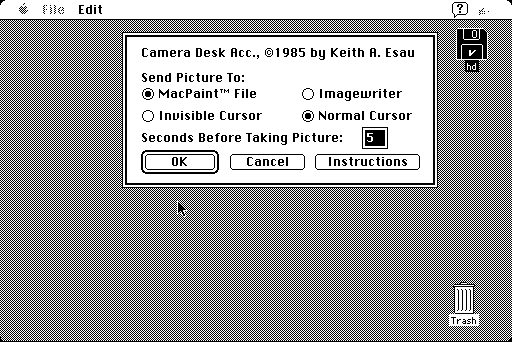

Download
camera.zip (8K) Camera repackaged into a zipped hfs disk image and checksum file. The disk image can be mounted with Mini vMac.
camera.hqx (8K) Camera in the original format.
copyright: Keith A. Esau
mod date: Jul 14, 1990
license: ?
A Desk Accessory for taking screenshots. Unlike the built in Command-Shift-3 FKEY, Camera allows you to specify a delay before the picture is taken. So you can take a picture of selecting from a menu.
The original archive doesn't include documentation or specify a license. I found it in the University of Michigan's Macintosh Public Domain and Shareware Archive, so presumably it is permitted to include it here.

If you find these downloads useful, please consider helping the Gryphel Project, which hosts them.
Here are the md5 checksums for the downloads, signed with Gryphel Key 5:
--------- GRY SIGNED TEXT --------- 7a054a39a5983aca30145d325eccb659 camera.zip eb8744316efeffba839d7726b8e1c63a camera.hqx ------- BEGIN GRY SIGNATURE ------- Gry/4Xa8CFcUzxdN/K8ahJ12o9DhPxcn48mONrar/MyJOC6UnnSpZQXhKcuHuaD6 tZc9qRjm0i6jX1fVILB3teIsySwXT0sFr9YdvAaT3RS8BYWAYrS0STaImw1gmLaz ctiOPlbS2TygDcOHOXJvbiuhIx+TREQQfzld10VjeBEdSrX7VoqMt3W+wHEwbVJf -------- END GRY SIGNATURE --------